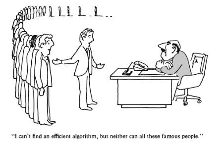
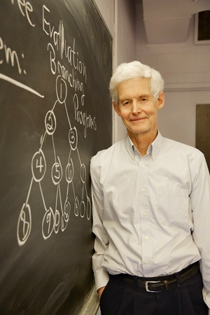

NP-completeness
Decision problems
From optimization to decision problems
Verification
P & NP
Completeness
NP-completeness
Decision problem
Definition
A decision problem is a problem whose answer is YES or NO.
Examples of problems:
Connectivity test: Given a graph $G$, is it fully connected?
Given a polynomial $P(x)$ does it have an integer valued solution?
Given an array $A$ and an element $x$, does $x$ appear in $A$?
Primality test: Given an integer $K$, is it a prime number?
Size of problem
Each problem can have infinitely many instances. Each instance has a size.
The size of a problem is the number of symbols required to represent the problem.
We actually don’t care if it’s in binary or ASCII encoding.
________________________
Connectivity of a graph $G$:
We need $V$ symbols to represent each vertex. Each symbol requires $\log(V)$ bits for the vertex ID.
Each edge is $2\log(V)$ bits to encode the end-points of the edge. We need $E$ number of edges.
So the size of the instance is $V\log(V) + 2E\log(V)$ as a binary string.
Primality test:
We need $\log(K)$ bits to represent the integer.
So the size of the instance is $\log(K)$ as a binary string.
Why decision problems?
We don’t need to worry about the presentation of the solution. It’s always 0 or 1.
It captures the essence of optimization.
Optimization $\to$ decision
An optimization has two components:
An instance of the problem $P$, and
a cost function $f$ over all possible solutions.
The solution is $S$ such that $f(S)$ is optimal.
__________________________
We can convert an optimization problem to a decision problem:
An instance $P$
A cost function $f$
Solution is $S$ such that $f(S)$ is maximized.
An instance $P$
A cost function $f$ and a threshold $k$.
Yes if there exists a solution $S$ such that $f(S) \geq k$.
_____________________
Example
Optimization:
Given a graph $G$, and two vertices $s, t\in V(G)$, find the shortest path $p$ from $s$ to $t$.
Decision:
Given a graph $G$, and two vertices $s, t\in V(G)$, and a threshold $k$.
Is there a path $p$ from $s$ to $t$ with $w(p)\leq k$.
Back to decision problems
Solving a decision problem
An algorithm $\mathcal{A}$ such that for every instance $P$ of a certain type of problem, $\mathcal{A}(P)\in\mathrm{Boolean}$ is the correct decision.
Verifying a decision problem
An algorithm $\mathcal{B}$ such that for every instance $P$, a cost function $f$, and the threshold $k$
Given a candidate solution $S$ of $P$,
$\mathcal{B}(P, k, S)$ verifies that $f(S)\leq k$.
Verification is easier
Example:
Given a graph $G$ and $s,t\in V(G)$, is there a path $p$ such that $w(p)\leq k$?
Can you construct $\mathcal{A}(G, s, t, k)$?
Maybe, but it’s just as difficult of constructing the Dijkstra’s algorithm.
Just as hard as the optimization problem.
_____________
Example:
Given a graph $G$ and $s,t\in V(G)$, is there a path $p$ such that $w(p)\leq k$?
Can you construct $\mathcal{B}(G, s, t, k, p)$, where $p$ is a path in $G$?
Check $p$ connects $s$ to $t$.
Find the total weight $w(p)$ and test if $w(p) \leq k$.
Easy - can be done in $\mathcal{O}(n)$.
Complexity classes: P
Definition: The P complexity class
A class of decision problems is in P if the $\mathcal{A}$ can be implemented in $\mathcal{O}(n^k)$ for some $k$, where $n$ is the input problem size.
P is the collection of all types of problems that can be solved by algorithms in polynomial time.
Example:
- Graph connectivity is in P.
Complexity classes: NP
Definition: The NP complexity class
A class of decision problems is in NP if the $\mathcal{B}$ can be implemented in $\mathcal{O}(n^k)$ for some $k$.
NP is the collection of all types of problems that can be verified in polynomial time.
Theorem:
$$ \mathbf{P} \subseteq \mathbf{NP} $$
The knapsack problem:

We have a collection of items, each with some weight $w_i$, and value $v_i$.
We have a total capacity $C$.
Which items $J$ do we take so that $$\sum_{i\in J} w_i \leq C$$ and we maximize
the total value $$\sum_{i\in J} v_i$$?
Knapack: the decision problem
Problem instance:
- The weights ${w_i}$ and values ${v_i}$, and capacity $C$.
- A threshold on value $k$.
Solving:
- $\mathcal{A}(P)$ is a collection of items
$J= \{i_1, i_2, \dots\}$such that$\sum_J w_i \leq C$and$\sum_J v_i \geq k$.
Verifying:
- We are given a collection of items $J$, we need to check
$\sum_J w_i \leq C$and$\sum_J v_i \geq k$.
Knapsack:
Verification of knapsack can be done in $\Theta(n)$.
Therefore, $\mathbf{KNAPSACK} \in \mathbf{NP}$
So, $\mathbf{KNAPSACK} \in \mathbf{P}$ ???
We don’t know, and we have been working on it since 1970.

Polynomial reduction
Definition
Let $X$ be a decision problem, and $Y$ another decision problem. We can say that $X$ no harder than $Y$ if there exists a polynormial-time algorithm
$$\theta:\mathrm{instance}(X)\to \mathrm{instance}(Y)$$
such that:
$$ \forall P\in\mathrm{instance}(X), P\mathrm{\ is\ true} \iff \theta(P) \mathrm{\ is\ true}$$
If there exists such $\theta$, then we say that
$$ X\leq^P Y $$
which reads $X$ is reduced to $Y$, and $\theta$ is the reduction.
_______________________
Intuition
If $X\leq^P Y$, then $X$ can be solved using a solver for $Y$. Furthermore, since the reduction must be in polynormial time, we have:
$$ Y\in\mathbf{P} \implies X\in\mathbf{P} $$
$X$ is no harder than $Y$.
NP-hard problems
Definition
A problem $Y$ is NP-hard if:
$$\forall\ X\in \mathbf{NP},\ X\leq^P Y$$
NP-completeness
A surprising discovery:
There exists $Y\in\mathbf{NP}$ that is NP-hard.
Definition:
$\newcommand{\npc}{\mathbf{NP}\text{-complete}}$ $\newcommand{\nphard}{\mathbf{NP}\text{-hard}}$
$$\npc = \mathbf{NP}\cap\nphard$$

Stephen Cook, University of Toronto, 2013
The significance of NP-complete problems
They are easy to verify.
They are the hardest problems to solve in NP.
They are all equally hard to solve:
$\forall X, Y\in\npc, X\leq^P Y \mathrm{\ and\ } Y\leq^P X$ (by definition)
Therefore, $ X\simeq^P Y $
Knapsack revisited
Theorem:
The decision problem of KNAPSACK is NP-complete.
$$ \mathbf{KNAPSACK} \in \npc $$
Finding over NP-complete problems
The key is to use reduction.
Observation:
If:
- $Y\in\mathbf{NP}$, and
- $\exists X\in\npc$ such that $X\leq^P Y$
Then $Y\in\npc$.
Our second NP-complete problem
Integer linear programming (ILP)
A matrix
$$ A = \left[\begin{array}{ccc} a_{11} & a_{12} & \dots \\ a_{21} & a_{22} & \dots \\ \vdots & \vdots & \ddots \\ \end{array}\right]_{mn} $$Vectors
$$ C = \left[\begin{array}{c} c_1 \\ c_2 \\ \vdots \\ \end{array}\right]_{m1} \quad B = \left[\begin{array}{c} b_1 \\ b_2 \\ \vdots \\ \end{array}\right]_{n1} \quad k \in \mathbb{R} $$variables:
$$ x = \left[\begin{array}{c} x_1 \\ x_2 \\ \vdots \\ \end{array}\right]_{n1} $$
Does there exists a solution for $x$ such that $x_i$ are integers satisfying:
$A\cdot x \leq C$, and
$B^T\cdot x \geq k$ ?
Integer Linear Programming
Claim:
! $\mathbf{ILP}\in\npc$
Proof:
We can reduce KNAPSACK to ILP:
$A$ is a diagonal matrix with the diagonal being the weights $w_i$.
For each element $i$, we create an integer variable $x_i$.
For each $x_i$, we impose $x_i <= 1$ and $-x_i <= 0$. This forces each $x_i\in{0, 1}$.
$C$ is the capacity.
$B = [v_1 v_2 \dots v_n]$, so $B^T x$ is the total selected value.
______________
Proof continue
So we can see that KNAPSACK is yes if and only if the corresponding ILP is yes.
The transformation from KNAPSACK to ILP can be done in polynomial time, so
$$\mathbf{KNAPSACK}\leq^P\mathbf{ILP}$$
Since KNAPSACK$\in\npc$, we conclude ILP$\in\nphard$.
It’s almost trivial to check that ILP can be verified in polynomial time. Therefore, $\mathbf{ILP}\in\mathbf{NP}$.
Therefore,
$$\mathbf{ILP}\in\npc$$
Intractability
It’s been over 30 years since we have tried to decide if $\npc\in\mathbf{P}$.
We know:
$$\npc\in\mathbf{P} \iff \mathbf{P} = \mathbf{NP}$$
The 3 decades of “failure” certainly means one thing:
No human has ever come up with a polynomial algorithm for a NP-complete problem.
If you have a NP-hard optimization problem, don’t bother trying to obtain the optimal solution. It’s been a failed attempt for 30+ years.
_________________
There are thousands of NP-complete problems known to us:
! https://en.wikipedia.org/wiki/List_of_NP-complete_problems
Scheduling
Pattern matching
Chess
Cracking passwords
and of course, Knapsack.